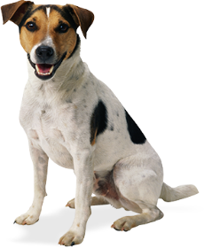

A Solon Clínica é uma instituição dedicada ao cuidado de animais no Sertão Central do estado do Ceará. Fundada com a missão nobre de fornecer assistência médica e apoio a animais em situação de vulnerabilidade, a clínica opera como uma organização sem fins lucrativos, buscando o bem-estar dos animais e contribuindo para a promoção da saúde animal na região.
Comprometida com a ética e o respeito aos seres vivos, a Solon Clínica oferece serviços veterinários abrangentes, incluindo consultas, tratamentos, cirurgias e cuidados preventivos. Além disso, a clínica desempenha um papel vital na conscientização da comunidade sobre a importância do cuidado adequado aos animais, promovendo práticas responsáveis de posse e respeito ao meio ambiente.
Guiada por valores de compaixão e solidariedade, a Solon Clínica busca ser um farol de esperança para os animais que enfrentam desafios no árido Sertão Central do Ceará. Seu compromisso é proporcionar um ambiente saudável e amoroso, onde cada vida animal importa e recebe o suporte necessário para viver plenamente.
A clínica conta com profissionais dedicados, voluntários engajados e parceiros que compartilham a visão de um mundo onde os animais são tratados com dignidade e recebem os cuidados essenciais para uma vida feliz e saudável. A Solon Clínica, como uma iniciativa sem fins lucrativos, depende do apoio da comunidade e de doações para continuar fazendo a diferença na vida dos animais necessitados.
